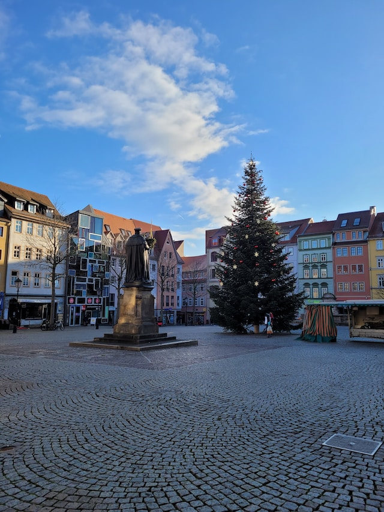

Städte
Erfurt
- Sie ist die Hauptstadt von Thüringen
- Einwohner: 213.699
- Bevölkerungsdichte: 790 Einwohner je km 2
- Fläche: 269,2 km 2
Ausflugsziele in Erfurt
Jena

- Sie ist eine deutsche Universitätsstadt
- Einwohner: 111.407
- Bevölkerungsdichte: 963 Einwohner je km 2
- Fläche: 114.77 km 2
Ausflugsziele in Jena
Weimar
- Sie ist dafür bekannt das Goethe und Schiller hier lebten
- Einwohner: 65.090
- Bevölkerungsdichte: 771 Einwohner je km 2
- Fläche: 84.48 km 2
Ausflugsziele in Weimar